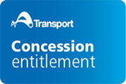

Ex-members of Defence Force with a disability
Ex-members of Defence Forces Transport Concession Entitlement Card
If you have an Ex-member of Defence Forces Transport Concession Entitlement Card, you are entitled to free travel on most public transport in NSW. Free travel is not available on private ferries, event shuttle buses, chartered bus services and Great Southern Rail services.
You must carry your Ex-member of Defence Forces Transport Concession Entitlement Card as proof of entitlement, or you may be fined.

You are eligible to apply for an Ex-Member of Defence Forces Transport Concession Entitlement Card, if you meet the following criteria:
- You are residing permanently in NSW; and
- You are a war veteran from Australia, New Zealand or a WW2 Allied Nation with reciprocal pension rights with Australia; and either
- You have been rated by the Department of Veterans' Affairs (DVA) as having a service-related disability of 10 per cent or greater under the Veterans’ Entitlements Act 1986 (Cth) for which you receive a disability pension; or
- You receive periodic payments or have received a lump sum payment from DVA for permanent impairment compensation and your overall impairment points determined under the Military Rehabilitation and Compensation Act 2004 (Cth) for injuries or diseases related to overseas warlike or non-warlike service are at least 10 points.
Warlike and non-warlike service is as defined in the determinations made under paragraphs 6(1)(a) and 6(1)(b) of the Military Rehabilitation and Compensation Act 2004 (Cth).
When you apply for a Transport Concession Entitlement Card, you can apply for a free travel Opal card at the same time.
How to apply
- Select 'Apply online' button
- Select the entitlement type ‘Veteran Concession’
- Enter your DVA file number (using capital letters without any spaces e.g. NNN12345)
- If more than one family member is applying, enter your Unique Identification Number (UIN) provided by DVA
- Complete the online application.
When your eligibility is confirmed, your card will be mailed to you within 8-10 working days. You will receive a free travel Opal card at the same time.
Please note:
- The Ex-Members of Defence Force Transport Concession Entitlement Card is issued free of charge.
- If you are found to be ineligible, you will be advised when applying. You may be eligible for a Gold Opal card if you hold a DVA Gold Card. Find out more.
- The Ex-Members of Defence Force Transport Concession Entitlement Card is valid for up to three years or until your entitlement ceases (e.g. if you move interstate). If you are still eligible, you can renew your Transport Concession Entitlement Card.
If you are still eligible, you can apply to renew your Transport Concession Entitlement Card up to 6 weeks before it expires.
It's free to renew your Transport Concession Entitlement Card.
If you renew, a new card, valid for up to 3 years after the first card expires, will be sent to you within 8 to 10 working days.
You will need:
- Your DVA file number
How to renew:
- Select the 'Renew online' button
- Select the entitlement type and enter your DVA file number (using capital letters without any spaces e.g. NNN12345).
- Enter your personal details exactly.
- Complete the online application.
Please note:
- The renewal process is not automatic – you have to renew the card yourself.
- You can renew your card even if your existing card has already expired, as long as you still meet the eligibility criteria.
- You will need to travel on a full Adult fare until your new card arrives. If you travel with a free travel Opal card without a proof of concession entitlement you can be fined.
If your Transport Concession Entitlement Card has been lost or stolen, you can apply for a replacement card online or call 131 500. A card replacement fee may apply.
Your replacement card will have the same expiry date as the original lost or stolen card. By ordering a replacement, the original lost or stolen card will be cancelled.
How to replace online:
- Select the 'Replace online' button
- Complete the online application.
Please note:
- A card replacement fee may apply.
- If the lost or stolen card is due to expire within 6 weeks, you need to renew online and be reassessed for eligibility. If you’re still eligible, a new card with up to 3 years validity will be sent to you within 8 to 10 working days.
- You will need to travel on a full Adult fare until your new card arrives. If you travel with a free travel Opal card without a proof of concession entitlement you can be fined.
- Lost free travel Opal cards can also be replaced online.
If you have changed your name, address, email address, phone number or title, you can update your details for your Transport Concession Entitlement Card online.
Update your details
- Select the 'Update my details' button
- Complete the online form to update your details
Ticket options
Transport Concession Entitlement Card holders

In the Opal network present your Transport Concession Entitlement Card to transport staff for free travel. If you do not have your proof of entitlement card, you are required to pay for and travel with an Adult fare, or you may be fined for travelling on an invalid ticket.
To be able to open gates at train stations and ferry wharves without staff, you can use a free travel Opal card. It is optional and for convenience. It is not a requirement for free travel.
If you already have your Transport Concession Entitlement Card, contact us via the Concessions feedback form or call 131 500 to get your free travel Opal card.
If you are applying for a new Transport Concession Entitlement Card online, you will automatically receive a free travel Opal card at the same time. You will need your DVA number for the application.
The free travel Opal card is valid for five years or until your entitlement ceases.
Sydney Airport train stations
Eligible ex-members of defence are entitled to a Concession Sydney Airport station access fee.
If travelling with an approved attendant, they will need to pay the Adult Sydney Airport station access fee.
You will need to show your proof of entitlement to staff, and both pay at the airport train station ticket gates.
Transport Concession Entitlement Card holders
If you have an Ex-Member of Defence Forces Transport Concession Entitlement Card you are entitled to free travel on privately-operated regular route local bus services. You will need to show your card to the driver. The driver will check that you have ‘TRAVEL PASS ED’ printed on the back of your card.
Other privately owned and operated services may offer concessions at their own discretion. Check with local transport operators before you travel.
Free trips on NSW TrainLink Regional services
If you reside outside the Sydney and Newcastle suburban areas, you are entitled to three return or six single free trips on NSW TrainLink Regional services, each calendar year, for travel within NSW or the portion of an interstate journey.
When travelling interstate with your free journeys, you will need to pay the applicable fare from the NSW border to the interstate destination.
Once these free journeys have been used, you and your attendant must pay for Adult fares.
Concessions do not apply when booking sleeping berths.
Transport Concession Entitlement Card for eligible Ex-Members of the Defence Forces with a Disability
- A Transport Concession Entitlement Card issued to eligible Ex-Members of the Defence Forces (with a disability) provides access to free travel on certain transport services, further details of which are available at transportnsw.info/ex-defence.
- When travelling inside the Opal network (that is, in Sydney, the Blue Mountains, Central Coast, Hunter, Illawarra and Southern Highlands), you can show your Transport Concession Entitlement Card to station or wharf staff, to have staff open station and wharf gates for you, or to bus drivers.
- If you are using your free travel Opal card, you must also carry your Transport Concession Entitlement Card as proof of entitlement.
- When you enter or exit Sydney Domestic Airport Station or International Airport Station, you can show your Transport Concession Entitlement Card to request a reduced Sydney Airport station access fee. See transportnsw.info/ex-defence.
- When travelling on local buses outside of the Opal network where free travel is available (further details of which are available at transportnsw.info/ex-defence), you must show your Transport Concession Entitlement Card as your ticket and proof of entitlement to free travel on local buses. If you live outside the Sydney and Newcastle suburban areas you are entitled to a combined total of three return or six single free journeys on NSW TrainLink regional services each calendar year, for travel within NSW or the NSW portion of an interstate journey. To book these journeys you need to present your Transport Concession Entitlement Card at any NSW TrainLink ticket office or accredited travel agency.
- You must carry your valid Transport Concession Entitlement Card at all times when travelling and produce it upon request by a driver, Revenue Protection Officer or Police. Failure to produce your Transport Concession Entitlement Card upon request may result in a fine being issued to you.
- To be eligible for a Transport Concession Entitlement Card as an Ex-Member of the Defence Forces (with a disability) you must:
- be residing permanently in NSW,
- be a war veteran from Australia, New Zealand or a WWII Allied Nation having reciprocal pension rights with Australia, and
- have been rated by the Department of Veteran Affairs (DVA) as having a service-related disability of 10% or greater for which you receive a disability pension, or
- be receiving periodic payments or have received a lump sum payment from DVA for permanent impairment compensation and your overall impairment points determined under the Military Rehabilitation and Compensation Act (Cth) relating to overseas warlike and non-warlike service are 10 points or higher.
- You may also be eligible to apply for an attendant to travel with you, if you provide a copy of a letter issued by the Department of Veterans’ Affairs confirming you are the recipient of an Attendant Allowance. An attendant may only travel together with you, and you must be carrying a Transport Concession Entitlement Card that says ‘plus attendant’.
- The Transport Concession Entitlement Card is not transferable and must only be used by you. You must not allow other people to use your Transport Concession Entitlement Card. Misuse may result in withdrawal of your concession entitlement.
- Your Transport Concession Entitlement Card is valid up to the expiry date printed on the back, subject to you continuing to meet the eligibility criteria.
- If you still meet the eligibility criteria you can renew your Transport Concession Entitlement Card before its expiry online at transportnsw.info/ex-defence. It is your responsibility to renew your Transport Concession Entitlement Card and you may be fined if you travel without having a valid Transport Concession Entitlement Card. If you do not renew your Transport Concession Entitlement Card before its expiry, an application for a new card can be made online at transportnsw.info/ex-defence.
- If you no longer meet the eligibility criteria (for instance, you are no longer a permanent resident of NSW) you will no longer be entitled to free travel, and must no longer use your Transport Concession Entitlement Card or free Opal card (if you have one).
- If your Transport Concession Entitlement Card is lost or stolen you can apply for a replacement card which will have the same expiry date as your previous card. Applications for replacement cards can be made online at transportnsw.info/ex-defence. A card replacement fee may apply.
- The Transport Concession Entitlement Card remains the property of Transport for NSW and must be returned to Transport for NSW upon request.
- You must pay a full adult fare if you do not hold or are not carrying a valid Transport Concession Entitlement Card. This includes if you are waiting for a replacement card or a new card.
-
Transport for NSW (TfNSW) is committed to protecting the privacy of your personal information in accordance with the Privacy and Personal Information Protection Act 1998 (NSW) and the Health Records and Information Privacy Act 2002 (NSW).
We collect, hold and use personal information for specific purposes relevant to our functions. Personal information you provide on this application form is collected for the purpose of administering and managing your Transport Concession Entitlement Card and free Opal card (if applicable), and for directly related purposes such as audit, management and operational activities for concession travel.
You may choose not to provide your personal information or health information. However this may mean that it is not possible or practicable for us to deal with your application for concession travel.
If you have provided your DVA file number on this application, you authorise:
In applying for a Transport Concession Entitlement Card or free Opal card, you declare that you understand that:
TfNSW will not otherwise disclose your personal or health information unless you consent, or we are permitted or required to by law.
For information about how your personal information is collected, used and disclosed by us please see our Privacy Policy at www.transport.nsw.gov.au/about/privacy.
For information about how your personal information is collected, used and disclosed in the Opal ticketing system, read our Opal Privacy Policy at transportnsw.info/opal-privacy-policy.
TfNSW will keep your information at 18 Lee Street, Chippendale NSW 2008. You can ask to access or amend your personal information held by us at any time during business hours, by contacting privacy@transport.nsw.gov.au or PO Box K659 Haymarket NSW 1240.
- TfNSW to use Centrelink Confirmation eServices to perform a DVA enquiry of your Centrelink or Department of Veterans' Affairs (DVA) customer details and concession card status in order to enable TfNSW to determine if you qualify for a concession; and
- The Australian Government Department of Human Services (the department) to provide the results of that enquiry to TfNSW.
- TfNSW may disclose your personal and health information to the Department or DVA, and that the Department or DVA will use information you provide to TfNSW to confirm your eligibility for concession travel.
- This consent, once signed or affirmed, remains valid while you are a customer of TfNSW, unless you withdraw it by contacting TfNSW or the Department.
- You can obtain proof of your details from the Department and provide it to TfNSW so that your eligibility for concession travel can be determined.
- If you withdraw your consent, or do not provide proof of your details, you may not be eligible for concession travel.
-
These terms and conditions may be amended from time to time. Any changes will take effect when they are published on our website: transportnsw.info/veteran.